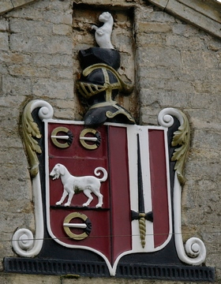

Blazonry is a special language used to describe heraldic shields. It was created in the middle ages by heralds to help them in their work of creating, cataloging and discussing the designs used on shields and other items.

Why do we need a special language? What is wrong with saying "the blue shield with a yellow band" or the "stripey red and green one with a black lion standing up"? The key reason is precision. Does the band run across the middle or from to bottom? Is the first stripe red or green? Does the lion have its paws raised, and which way is it looking? The language of blazonry allows us to answer all of these questions clearly and unambiguously. Give two heraldic artists the same blazon and they will both draw what is the recognisably the same shield. There might be minor stylistic differences but they will clearly be the same "Coat of arms".
Why should you learn blazonry? Well, coats of arms appear in hue number of places - on buildings, in documents, on product packaging, in logos and in TV shows and movies! Learning blazonry will let you spot the common features between arms, you'll be able to discuss and understand arms with others in the field, and the subject is interesting in its own right. And, best of all, you will be able to enter blazons into DrawShield and create your own coats of arms images!
The language may seem strange at first, it is a curious mixture of French words pronounced in English, mediaeval words that are otherwise long out of use and the odd bit of Latin. However, the language is completely logical and consistent - once you learn a term it means the same thing wherever it is used. And you can describe and create interesting coats of arms with just a few key terms, so you can start small and build up your knowledge over time. Along the way you will learn a lot of history, something about art and enter into something that can become a lifelong hobby!
Take the first step by going on to the next page...